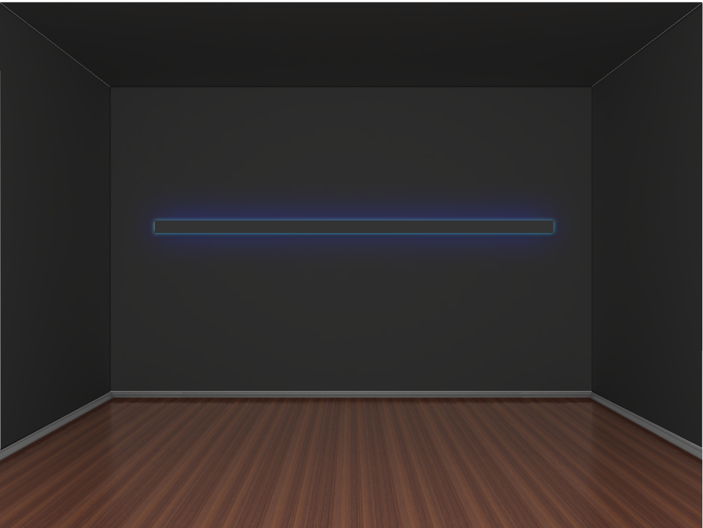

Dance of the Rain
A light visualization of historical rain data of cities around the globe.
Highlights
Skill: Arduino, HTTP Request, JSON Parsing, Fabrication, Neopixels.
Time: 3 weeks in May 2020.
Ideal Venue
My work will live in transportation stations such as train stations and airports. I want it to be experienced by many travellers. Through the rhythm of the light, controlled by the data precipitation and rain days, I want to create a sense of calmness in the busy spaces while allowing people to travel around different cities/countries through patterns of the rain in each place.
Concept
There are certain parts of New York that remind me of my hometown back in China. The rainy season in New York makes me think of my family and my childhood. I remember that I loved looking up to the skywindow of the car on the way for my piano lesson especially during the rainy season. Each rain drops at different times, which makes the dropping sound so musical. I wanted to create a piece where people can see the music of raindrops through light. And hopefully, they will be taken back to the moments they treasure associated with the rainy season in their hometowns or favorite cities.
Ideal Installation
- Mount the piece onto the wall
- Place it in the center and secure it with screws
- Plug it in to the wall plug
Development
Sketch for Installation
System diagram

Special thanks to Yeseul Song.